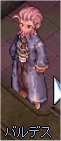
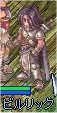
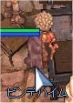
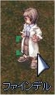
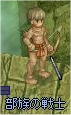
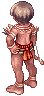
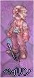
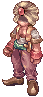
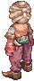

画像にリンクがはってあるものは、クリックすると別窓で大きめサイズが表示されます。
[ハイシャ]
所在地；ジュノー（208, 164） |
   |
[バイノ]
所在地；カピトーリナ修道院内(prt_monk:197,228) |
   |
[パノ神官]
所在地；フレイヤ大神殿（セスルムニル）内入り口そば |
   |
[バムプ神父]
所在地；プロンテラ大聖堂奥の室内 |
  |
[バルデス]
所在地；モロク秘密の酒場奥 |
 |
[ハン ヨンキョウ]
所在地；コンロン(237,226) |
   |
[ビスカス神父]
所在地；プロンテラ大聖堂奥の室内 |
 |
[ビルリック]
所在地；ウンバラ（214,181） |
  |
[ビンデハイム]
所在地；アインベフカプラ南方向 |
  |
[ファインデル]
所在地；連合軍駐屯地(146,306) |
|  |
[武器商人]
所在地；カピトーリナ修道院内(prt_monk:135,263) |
   |
[部族の戦士]
所在地；ブラジリスフィールド？ |
|  |
[プラ神父]
所在地；プロンテラ大聖堂内(prt_church:179,15) |
   |
[ブラディウム]
ヨトゥンヘイムにある鉱石。 |
[プレネタン]
所在地；ウンバラ室内 |
   |
[ペイリン]
所在地；ニブルヘイム（153,215） |
|  |
[ヘイルレン]
所在地；飛行船シュバルツバルド国内線 |
  |
[ヘザー]
所在地；カピトーリナ修道院内(prt_monk:28,260) |
  |
[ベルツタン]
所在地；ウンバラ道具屋内 |
 |
[ペルロック]
所在地；飛行船シュバルツバルド国外線室内 |
   |
[募集担当官]
所在地；プロンテラ城内左奥(83,67) |
   |
[ポスティール]
所在地；フィゲルフィールド06(hu_fild06:34.123) |
   |
back
(c) Gravity Co., Ltd. & Lee MyoungJin(studio DTDS). All rights reserved.
(c) GungHo Online Entertainment, Inc. All Rights Reserved.
当コンテンツの再利用（再転載・配布など）は、禁止しています。